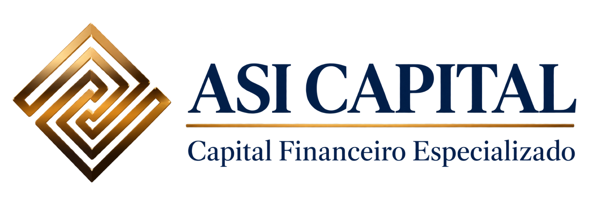

Propósito
Aproximar empresas e capital por meio de informação, inteligência, organização e confiança.

Experiência para compreender. Tecnologia para ampliar.
Processo para executar. Reputação para permanecer.
Desde 2016. Profissionais com atuação no mercado desde 2006. Uma modernização que preserva experiência, relacionamento e conhecimento de mercado.
A ASI Capital atua no espaço de informação, interpretação e execução entre a necessidade empresarial e a decisão de crédito. Transforma demandas em operações organizadas, compreensíveis, defensáveis e adequadamente apresentadas.
Documentação dispersa, finalidade mal explicada, garantias pouco compreendidas e endividamento sem contexto podem comprometer a análise de uma boa operação.
Não somos donos do crédito.
Somos donos da qualidade da apresentação da operação.
Aproximar empresas e capital por meio de informação, inteligência, organização e confiança.
Estruturar, qualificar, defender e encaminhar operações de crédito empresarial, conectando empresas às soluções e instituições mais adequadas com transparência, rastreabilidade e acompanhamento até o desfecho.
Consolidar a ASI Capital como referência nacional em estruturação e distribuição qualificada de crédito corporativo, reconhecida pela qualidade das operações, inteligência acumulada, confiança institucional e capacidade de execução em escala.
Organizamos a verdade. Contextualizamos riscos, mitigadores e racional econômico.
Nem toda receita é boa receita. Confiança não se troca por comissão.
Menos operações, melhor apresentadas. Escala depois de processo validado.
A necessidade da empresa é o ponto de partida.
Perguntar corretamente faz parte da entrega.
Cada envio precisa de uma hipótese racional de encaixe.
Origem, comissão, responsabilidades, riscos e conflitos seguem regras claras.
A decisão é da instituição. A qualidade da nossa entrega é nossa responsabilidade.
Pendência tem responsável e prazo. Decisão tem registro. Documento tem versão.
IA, automação e dados ampliam capacidade. Julgamento e responsabilidade permanecem humanos.
Documentação no momento certo, processo simples e análise profunda.
Valor legítimo e proporcional para cliente, instituição, parceiro e ASI Capital.
Quando uma instituição recebe uma operação da ASI Capital, a percepção que buscamos é: “Vale a pena olhar.”
Capital Financeiro Especializado. O arquivo original é a referência para todas as aplicações.
Não redesenhar, deformar, reinterpretar, simplificar, recortar ou alterar o símbolo. Preservar proporções, cores e espaçamentos.
Dimensionar mantendo a proporção. Usar o arquivo original na melhor resolução disponível.
Área de proteção e tamanho mínimo numérico dependem do arquivo técnico aprovado. As fontes dos textos não substituem a assinatura original.
Azul-marinho como base, dourado como acento e branco para criar respiro e clareza.
#10284ARGB 16, 40, 74
#B98A32RGB 185, 138, 50
#FFFFFFRGB 255, 255, 255
#F5F6F7RGB 245, 246, 247
#68758BRGB 104, 117, 139
Confiança, estrutura e presença institucional. Base de capas e áreas de destaque.
Detalhes, números, linhas e pontos de atenção. Evitar grandes áreas que prejudiquem a leitura.
Leitura, organização e respiro. Dourado sobre branco deve ser reservado a detalhes gráficos, com texto em azul-marinho.
HEX e RGB são as referências digitais. CMYK e acabamentos devem ser definidos com o perfil de impressão da gráfica.
A assinatura do logo permanece no arquivo original. As famílias abaixo são usadas na interface deste guia.
Aa
Títulos editoriais e frases de destaque. Contraste e personalidade com uso moderado.
Aa
Textos, navegação, tabelas e informação operacional. Clareza em diferentes tamanhos.
Estas famílias documentam a interface do guia e do site. Os PDFs estratégicos não definem uma família tipográfica oficial para produção de todos os materiais.
Priorizar fotografias reais, iluminação natural, ambientes de trabalho e detalhes que expressem experiência.
Composições naturais, tons institucionais e espaço para leitura. Evitar aparência plástica, poses artificiais e excesso de efeitos.
As imagens fornecidas são referências de aplicação. Validar origem e direitos antes de usar uma fotografia em campanhas.
A identidade se mantém reconhecível no ambiente, na comunicação e nos materiais institucionais.
Preservar bagagem e relacionamentos em composições atuais, claras e organizadas.
Dados e processos como apoio à inteligência humana. A experiência é a protagonista.
Elegância com linguagem acessível e informação que ajuda o cliente a decidir.
Materiais originais disponíveis para ampliação e download.
Organizar a verdade, explicar o contexto e tornar o processo compreensível. A linguagem comercial precisa refletir o que a ASI controla.
Nosso ativo é confiança. Nossa entrega é qualidade. Nosso resultado é consequência.
Experiente, inteligente e segura. Explicar com precisão, sem jargão desnecessário.
Partir da necessidade da empresa. Perguntar antes de oferecer um produto.
Distinguir preparação, encaminhamento e decisão. Contextualizar riscos e próximos passos.
| Público | Mensagem | O que sustenta a entrega |
|---|---|---|
| Empresa | Operação mais bem preparada para análise. | Cadastro, documentação, finalidade, garantias e endividamento organizados. |
| Instituição financeira | Oportunidade que vale análise. | Triagem, ficha da operação, contexto, riscos e justificativas coerentes. |
| Parceiros e originadores | Indicações com acompanhamento. | Origem registrada, contribuição real e remuneração contratual por conversão. |
| Equipe e sócios | Confiança construída no processo. | Responsabilidades claras, versões, prazos, transparência e dados rastreáveis. |
“Identificamos instituições compatíveis com o seu perfil.”
“Acompanhamos proposta, negativa, reanálise ou contratação.”
“Aprovação garantida.” · “Menor taxa garantida.”
“Conseguimos dinheiro para qualquer empresa.”
Experiência que estrutura. Tecnologia que escala.
Experiência para compreender. Tecnologia para ampliar. Processo para executar. Reputação para permanecer.
Começar controlado. Escalar com evidência.
Existem empresas procurando capital. Existem instituições procurando boas operações. Entre elas
existe ruído. Informação incompleta. Desconfiança. Burocracia. Tempo perdido. Operações mal
estruturadas. Empresas boas chegando ao lugar errado. Instituições recebendo demandas que
nunca deveriam ter chegado até elas.
Nós existimos para diminuir essa distância.
Não prometemos dinheiro. Prometemos trabalho.
Não prometemos aprovação. Prometemos preparação.
Não escondemos risco. Nós o compreendemos e o explicamos.
Não enviamos tudo para todos. Procuramos o lugar certo para cada operação.
Não queremos apenas fechar negócios. Queremos construir relações.
Não queremos ser conhecidos por quantos leads conseguimos gerar. Queremos ser reconhecidos
pela qualidade daquilo que colocamos no mercado.
Sabemos que crédito envolve confiança. E confiança não se automatiza. Não se compra. Não nasce
de campanha. É conquistada operação após operação. Documento após documento. Prazo após
prazo. Decisão após decisão.
Começaremos pequenos se for necessário. Aprenderemos rápido. Mediremos tudo. Corrigiremos o
que não funcionar. Criaremos capacidade somente quando houver demanda. Aceleraremos
somente quando houver evidência.
Porque nosso objetivo não é parecer grandes. É construir algo sólido o suficiente para se tornar
grande.
O crédito não é nosso. A decisão não é nossa. Mas a qualidade da operação que colocamos diante de
quem decide é nossa responsabilidade.
Essa é a ASI Capital.
Originação qualificada → Diagnóstico → Estruturação → Defesa → Distribuição → Acompanhamento.
Lead, origem e cadastro inicial.
Valor, finalidade, urgência e contexto empresarial.
Ficha, documentação, análise, produto, premissas e diligências.
Riscos, mitigadores e justificativa técnica quando necessária.
Instituição ou agente adequado ao perfil da operação.
Proposta, negativa, reanálise, negociação, contratação e relacionamento.
Por que esta empresa, buscando este valor, para esta finalidade, através desta estrutura, possui uma operação que merece ser analisada por esta instituição?
Capital de giro empresarial
Crédito com garantia de imóvel para empresários
Reestruturação de passivos
Operações com recebíveis
Operações com garantias reais
Sale and lease back e operações estruturadas com potencial para CRI, com parceiros e agentes autorizados adequados
Empresas ativas, demanda real de crédito e capacidade mínima de análise. Faturamento preferencial acima de R$ 10 milhões/ano; operação preferencial acima de R$ 500 mil. Garantias, recebíveis, contratos ou fluxo recorrente; documentação organizável e finalidade clara.
Evitar volume a qualquer custo, documentos ausentes, pedidos incompatíveis com a capacidade financeira, restrições graves sem mitigadores e omissão de informações.
Fee de diagnóstico quando aplicável, estruturação em trabalhos técnicos relevantes, success fee em crédito contratado ou liberado e retainer em demandas recorrentes.
Comissão quando prevista. Operações complexas combinam estruturação e success fee conforme contrato.
Origem comprovada, contribuição real e resultado convertido. Sem participação automática sobre outros canais. Bext é indicada no pitch como parceiro prioritário no arranque, sem exclusividade.
Produtos, perfis e modelo econômico reproduzem as diretrizes dos documentos fornecidos. Metas e estimativas são planejamento, não resultados já realizados ou condições garantidas.
CRM como sistema de verdade. Rastreabilidade ponta a ponta. Automação no repetitivo e julgamento humano onde existe responsabilidade.
Relacionamento institucional, crédito, jurídico, compliance, negociação, estruturação e leitura de risco.
Registrar origem, responsável, documentos, pendências, ficha, justificativa, instituições acionadas, propostas, negativas, receita, comissões e status.
Bureaus, automações e IA como apoio. Ferramentas ampliam capacidade; a decisão e a responsabilidade permanecem humanas.
Cenário de planejamento apresentado nos documentos. Não representa desempenho histórico da ASI.
Canal, cliente, produto, instituição, processo, tempo, conversão, perdas, economia e reputação.
Aquisição e CAC; tempo por etapa; valor solicitado, aprovado e liberado; conversão; resposta das instituições; receita, take rate, comissão, margem e recorrência.
Excelência operacional, inteligência de crédito, rede institucional, marca e reputação, escala disciplinada.
Custo operacional inicial estimado: R$ 12–15 mil/mês. Com pró-labore simbólico de R$ 2 mil por sócio: R$ 18–20 mil/mês.
Exemplos de receita líquida: R$ 500 mil a 1% = R$ 5 mil; R$ 1 milhão a 1% = R$ 10 mil; R$ 1 milhão a 1,5% = R$ 15 mil; R$ 2 milhões a 1% = R$ 20 mil; R$ 3 milhões a 1% = R$ 30 mil; R$ 5 milhões a 1% = R$ 50 mil.
São exemplos e projeções do documento, sujeitos a custos, contratos e efetiva conversão.
Não ocultar informações, falsificar documentos, prometer condições fora de controle, pressionar instituições a ignorar riscos ou distribuir operações indiscriminadamente.
Não aceitar operação só pela comissão. Tratar conflitos de remuneração com transparência e controlar a circulação de dados sensíveis.
Responsabilidades claras entre sócios e equipe. Erros devem ser comunicados. Relacionamento pessoal não substitui governança.
Conteúdo integral dos três documentos estratégicos, organizado por página e adaptado à denominação ASI Capital. Os PDFs para download permanecem originais.